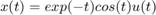
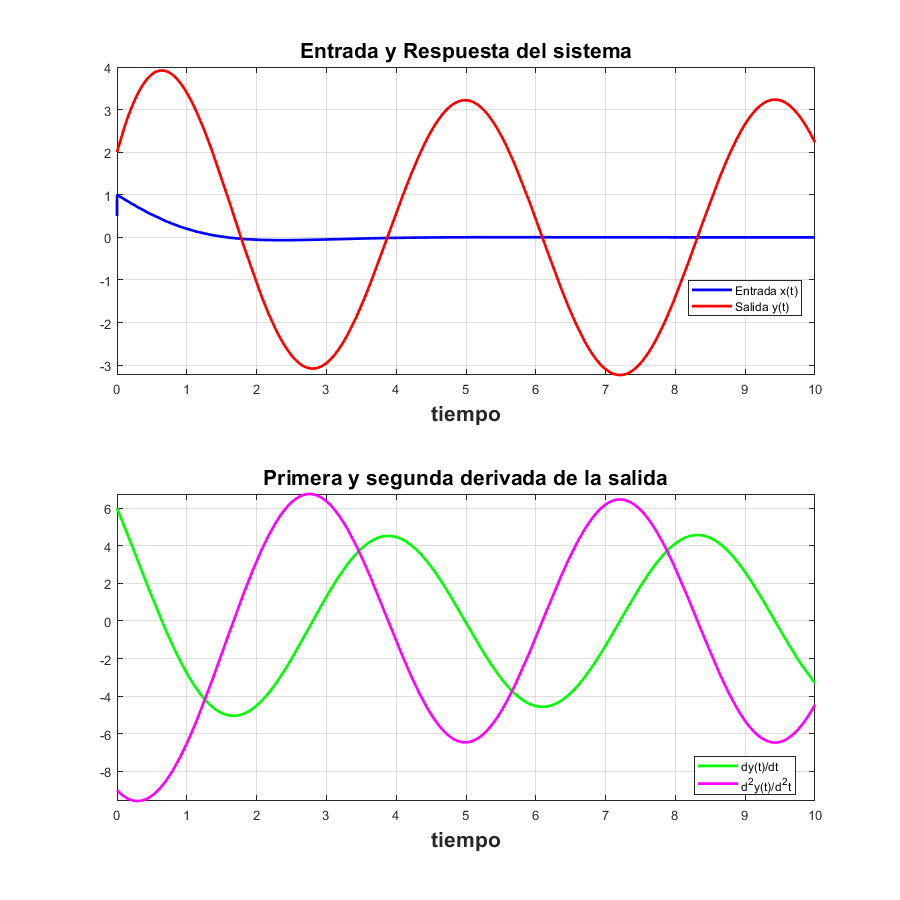
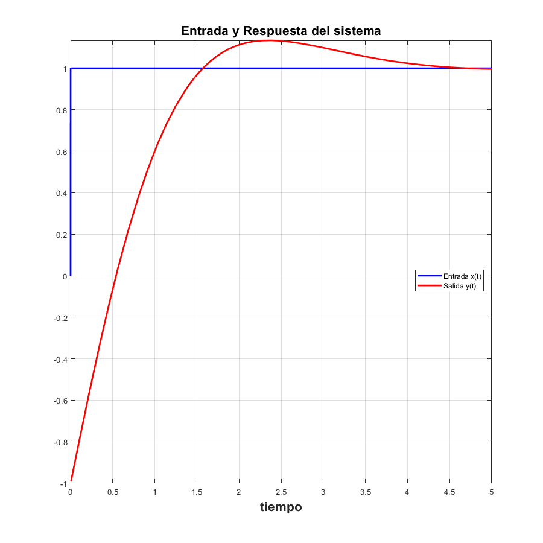
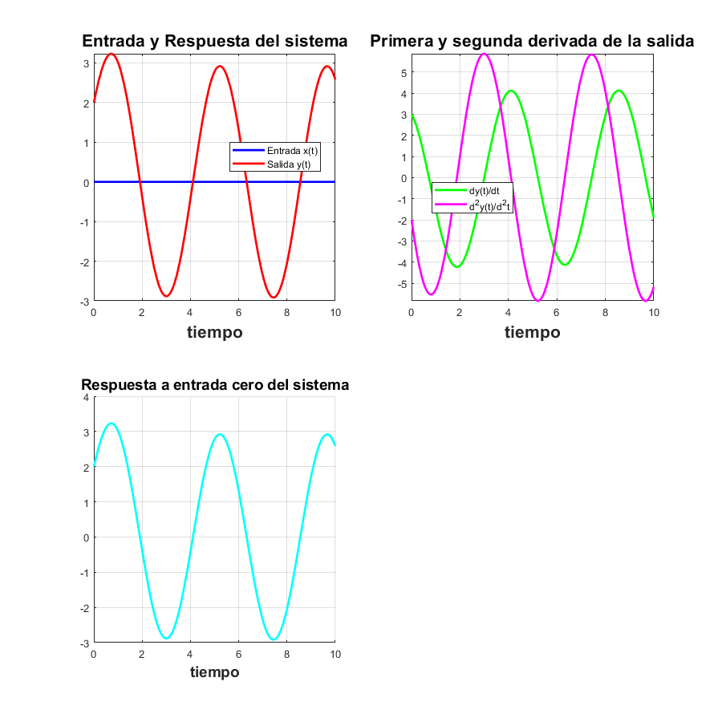
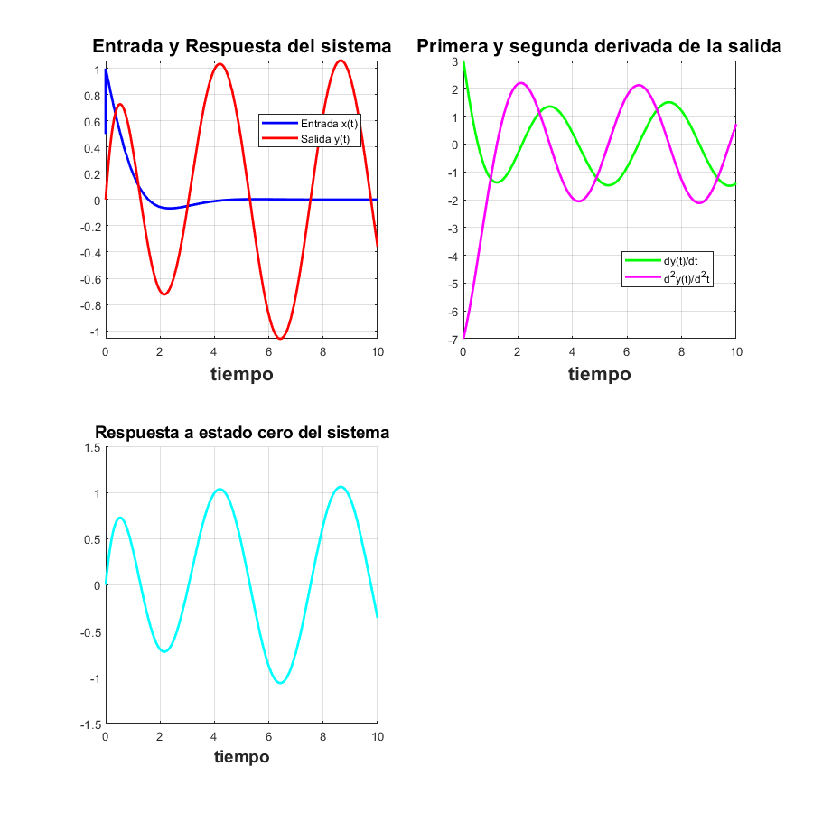
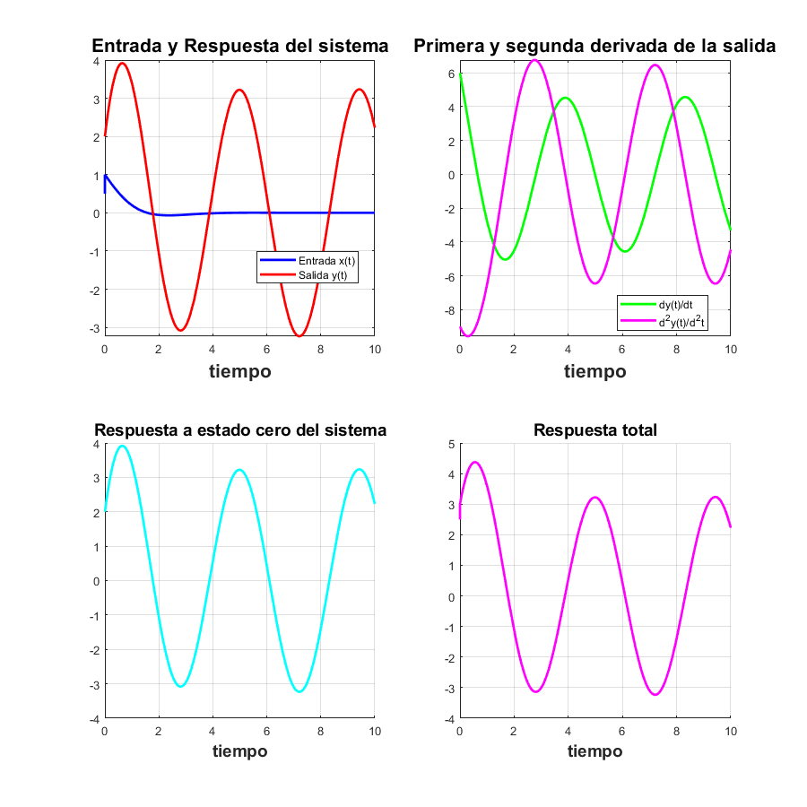
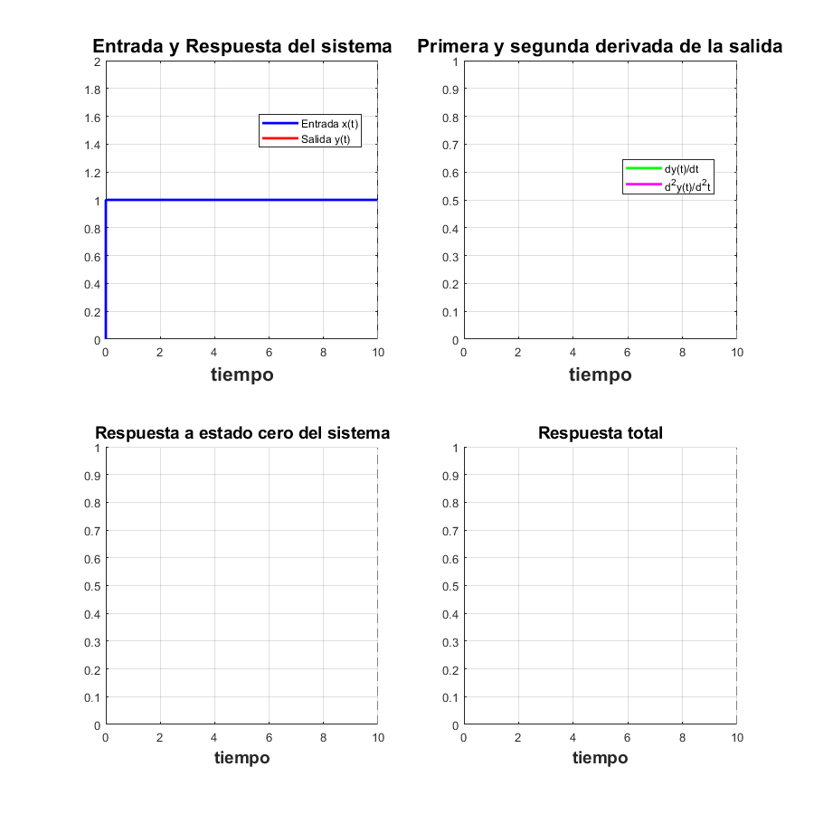

Práctica 6: Sistemas diferenciales
Contents
Datos generales:
Autor: Marmolejo Martínez Hamlet Jorge
% Grupo: 2TV2 % Profesor: Dr. Rafael Martínez Martínez
Objetivos:
- Conocer comandos para obtener las funciones de respuesta de un sistema
- Graficar las expresiones de respuesta
Introducción
En esta practica se mostrará como un programa resuelve sistemas diferenciales de orden n mediante la transformada de Laplace y Fourier, el programa despliega la función de trasnferencia, la respuesta al impulso, la respuesta a entrada cero, la respuesta a estado cero, la respuesta total con condiciones iniciales y las gráficas correspondientes
Desarrollo
Entregable 1
Se tiene el sistema del ejemplo Muestra la función de transferencia del sistema. Con la señal de entrada $
syms t
transformadaLaplace([2 2 1 1],[2 -1 3],[2 3 1],[0 1],exp(-t)*cos(t)*heaviside(t),10)
APLICAMOS TRANSFORMADA DE LAPLACE y substituimos condiciones iniciales
2 2 3
2 Y(s) - 5 s + 2 s Y(s) - 2 s + s Y(s) + s Y(s) - 8
=
2
2 X(s) - s X(s) + 3 s X(s) - 3
SUBSTITUIMOS LA TRANSFORMADA DE LA ENTRADA
2 2 3
2 Y(s) - 5 s + 2 s Y(s) - 2 s + s Y(s) + s Y(s) - 8
=
2
2 (s + 1) s (s + 1) 3 s (s + 1)
------------ - ------------ + ------------ - 3
2 2 2
(s + 1) + 1 (s + 1) + 1 (s + 1) + 1
DESPEJAMOS Y(s)
Y(s)=
4 3 2
2 s + 12 s + 21 s + 21 s + 12
---------------------------------
5 4 3 2
s + 3 s + 6 s + 8 s + 8 s + 4
DESARROLLAMOS LAS FRACCIONES PARCIALES DE Y(s)
Y(s)=
7 s 19 3
--- + -- s - -
3 6 2 2
-------- + --------- - ------------
2 3 (s + 1) 2
s + 2 s + 2 s + 2
Aplicamos transformada inversa, asi la solución es
y(t)=
2 exp(-t) 7 cos(sqrt(2) t) / 5 sin(t) \
--------- + ---------------- - exp(-t) | cos(t) - -------- |
3 3 \ 2 /
19 sqrt(2) sin(sqrt(2) t)
+ -------------------------
12
Ahora encontramos la función de transferencia del sistema
G(s) =
(((s + 1)^2 + 1)*(2/(3*(s + 1)) - (s + 1)/((s + 1)^2 + 1) + (7*s)/(3*(s^2 + 2)) + 19/(6*(s^2 + 2)) + 5/(2*((s + 1)^2 + 1))))/(s + 1)
/ 2 / 2 s + 1 7 s 19
| ((s + 1) + 1) | --------- - ------------ + ---------- + ----------
| | 3 (s + 1) 2 2 2
\ \ (s + 1) + 1 3 (s + 2) 6 (s + 2)
5 \ \
+ ---------------- | |/(s + 1)
2 | |
2 ((s + 1) + 1) / /
 Entregable 2
Se muestra la respuesta al impulso del sistema
syms t
transFourierImpulse([2 2 1],[2 1],sign(t),5)
APLICAMOS TRANSFORMADA DE FOURIER
2
2 Y(w) - w Y(w) + w Y(w) 2i
=
2 X(w) + w X(w) 1i
SUBSTITUIMOS LA TRANSFORMADA DE LA ENTRADA
2
2 Y(w) - w Y(w) + w Y(w) 2i
=
4i
2 - --
w
DESPEJAMOS Y(w)
Y(w)=
3
2 w + 4 w + 8i
- ---------------
5
w + 4 w
DESARROLLAMOS LAS FRACCIONES PARCIALES DE Y(w)
Y(w)=
w 1i - 1 - i w 1i - 1 + 1i 2i
------------ + ------------- - --
2 2 w
w - 2 w + 2 w + 2 w + 2
Aplicamos transformada inversa, asi la solución es
y(t)=
-(- 2 pi sign(t) + pi exp(t (- 1 - i)) (sign(t) + 1) + pi #1 (sign(t) + 1)
- pi exp(t (- 1 - i)) dirac(t) - pi #1 dirac(t) + pi exp(t (1 - i))
dirac(t) + pi exp(t (1 + 1i)) dirac(t))/(2 pi)
where
#1 == exp(t (- 1 + 1i))
 Entregable 3
Se muestra la respuesta a entrada cero del sistema
syms t
transLaplaceCero([2 2 1 1],[2 -1 3],[2 3 1],[0 1],0*t,10)
APLICAMOS TRANSFORMADA DE LAPLACE y substituimos condiciones iniciales
2 2 3
2 Y(s) - 5 s + 2 s Y(s) - 2 s + s Y(s) + s Y(s) - 8
=
2
2 X(s) - s X(s) + 3 s X(s) - 3
SUBSTITUIMOS LA TRANSFORMADA DE LA ENTRADA
2 2 3
2 Y(s) - 5 s + 2 s Y(s) - 2 s + s Y(s) + s Y(s) - 8
=
-3
DESPEJAMOS Y(s)
Y(s)=
2
2 s + 5 s + 5
-----------------
3 2
s + s + 2 s + 2
DESARROLLAMOS LAS FRACCIONES PARCIALES DE Y(s)
Y(s)=
4 s 11
--- + --
3 3 2
-------- + ---------
2 3 (s + 1)
s + 2
Aplicamos transformada inversa, asi la solución es:
y(t)=
2 exp(-t) 4 cos(sqrt(2) t) 11 sqrt(2) sin(sqrt(2) t)
--------- + ---------------- + -------------------------
3 3 6
Representa la respuesta de la entrada cero
 Entregable 4
Se muestra la respuesta a estado cero del sistema
syms t
transLaplaceCeroState([2 2 1 1],[2 -1 3],[0 0 0],[0 0],exp(-t)*cos(t)*heaviside(t),10)
APLICAMOS TRANSFORMADA DE LAPLACE y substituimos condiciones iniciales
2 3
2 Y(s) + 2 s Y(s) + s Y(s) + s Y(s)
=
2
2 X(s) - s X(s) + 3 s X(s)
SUBSTITUIMOS LA TRANSFORMADA DE LA ENTRADA
2 3
2 Y(s) + 2 s Y(s) + s Y(s) + s Y(s)
=
2
2 (s + 1) s (s + 1) 3 s (s + 1)
------------ - ------------ + ------------
2 2 2
(s + 1) + 1 (s + 1) + 1 (s + 1) + 1
DESPEJAMOS Y(s)
Y(s)=
2
3 s - s + 2
--------------------------
4 3 2
s + 2 s + 4 s + 4 s + 4
DESARROLLAMOS LAS FRACCIONES PARCIALES DE Y(s)
Y(s)=
1 3
s - - s - -
2 2
------ - ------------
2 2
s + 2 s + 2 s + 2
Aplicamos transformada inversa, asi la solución es:
y(t)=
/ 5 sin(t) \ sqrt(2) sin(sqrt(2) t)
cos(sqrt(2) t) - exp(-t) | cos(t) - -------- | - ----------------------
\ 2 / 4
 Entregable 5
Se muestra la respuesta total del sistema
syms t
transLaplaceTotal([2 2 1 1],[2 -1 3],[2 3 1],[0 1],exp(-t)*cos(t)*heaviside(t),10)
APLICAMOS TRANSFORMADA DE LAPLACE y substituimos condiciones iniciales
2 2 3
2 Y(s) - 5 s + 2 s Y(s) - 2 s + s Y(s) + s Y(s) - 8
=
2
2 X(s) - s X(s) + 3 s X(s) - 3
SUBSTITUIMOS LA TRANSFORMADA DE LA ENTRADA
2 2 3
2 Y(s) - 5 s + 2 s Y(s) - 2 s + s Y(s) + s Y(s) - 8
=
2
2 (s + 1) s (s + 1) 3 s (s + 1)
------------ - ------------ + ------------ - 3
2 2 2
(s + 1) + 1 (s + 1) + 1 (s + 1) + 1
DESPEJAMOS Y(s)
Y(s)=
4 3 2
2 s + 12 s + 21 s + 21 s + 12
---------------------------------
5 4 3 2
s + 3 s + 6 s + 8 s + 8 s + 4
DESARROLLAMOS LAS FRACCIONES PARCIALES DE Y(s)
Y(s)=
7 s 19 3
--- + -- s - -
3 6 2 2
-------- + --------- - ------------
2 3 (s + 1) 2
s + 2 s + 2 s + 2
Aplicamos transformada inversa, asi la solución es:
y(t)=
2 exp(-t) 7 cos(sqrt(2) t) / 5 sin(t) \
--------- + ---------------- - exp(-t) | cos(t) - -------- |
3 3 \ 2 /
19 sqrt(2) sin(sqrt(2) t)
+ -------------------------
12
Y la respuesta total es
yt(t) =
(2*exp(-t))/3 + (7*cos(2^(1/2)*t))/3 - exp(-t)*(cos(t) - (5*sin(t))/2) + (19*2^(1/2)*sin(2^(1/2)*t))/12 + exp(-t)*cos(t)*heaviside(t)
 Entregable 6
Se muestra la respuesta total al escalón
syms t
transLaplaceTotal([2 2 1 1],[2 -1 3],[0 0 0],[0 0],sign(t),10)
APLICAMOS TRANSFORMADA DE LAPLACE y substituimos condiciones iniciales
2 3
2 Y(s) + 2 s Y(s) + s Y(s) + s Y(s)
=
2
2 X(s) - s X(s) + 3 s X(s)
SUBSTITUIMOS LA TRANSFORMADA DE LA ENTRADA
2 3
2 Y(s) + 2 s Y(s) + s Y(s) + s Y(s)
=
2
3 s laplace(sign(t), t, s) - s laplace(sign(t), t, s) + 2
laplace(sign(t), t, s)
DESPEJAMOS Y(s)
Y(s)=
2
(3 s laplace(sign(t), t, s) - s laplace(sign(t), t, s) + 2
3 2
laplace(sign(t), t, s))/(s + s + 2 s + 2)
DESARROLLAMOS LAS FRACCIONES PARCIALES DE Y(s)
Y(s)=
2 laplace(sign(t), t, s)
------------------------
s + 1
s laplace(sign(t), t, s) - 2 laplace(sign(t), t, s)
+ ---------------------------------------------------
2
s + 2
Aplicamos transformada inversa, asi la solución es:
y(t)=
/ laplace(sign(t), t, s) \
ilaplace| ----------------------, s, t | 2
\ #1 /
/ s laplace(sign(t), t, s)
- ilaplace| ------------------------, s,
\ #1
/ 2 \
\ | s laplace(sign(t), t, s) |
t | + ilaplace| -------------------------, s, t | 3
/ \ #1 /
where
3 2
#1 == s + s + 2 s + 2
Y la respuesta total es
yt(t) =
sign(t) + 2*ilaplace(laplace(sign(t), t, s)/(s^3 + s^2 + 2*s + 2), s, t) - ilaplace((s*laplace(sign(t), t, s))/(s^3 + s^2 + 2*s + 2), s, t) + 3*ilaplace((s^2*laplace(sign(t), t, s))/(s^3 + s^2 + 2*s + 2), s, t)
